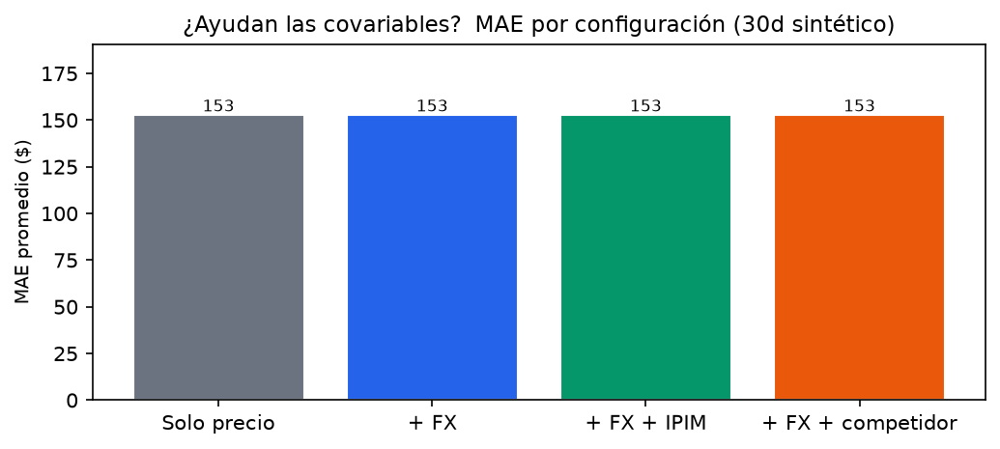
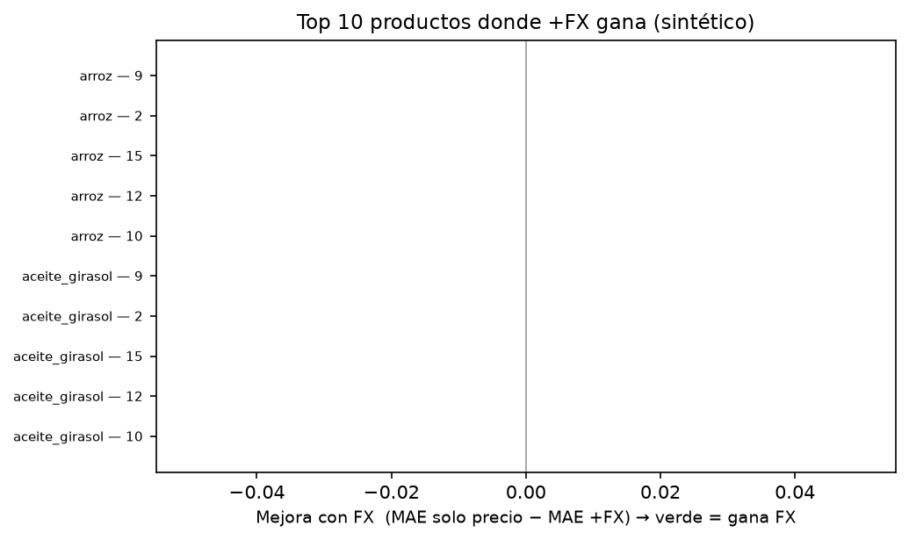
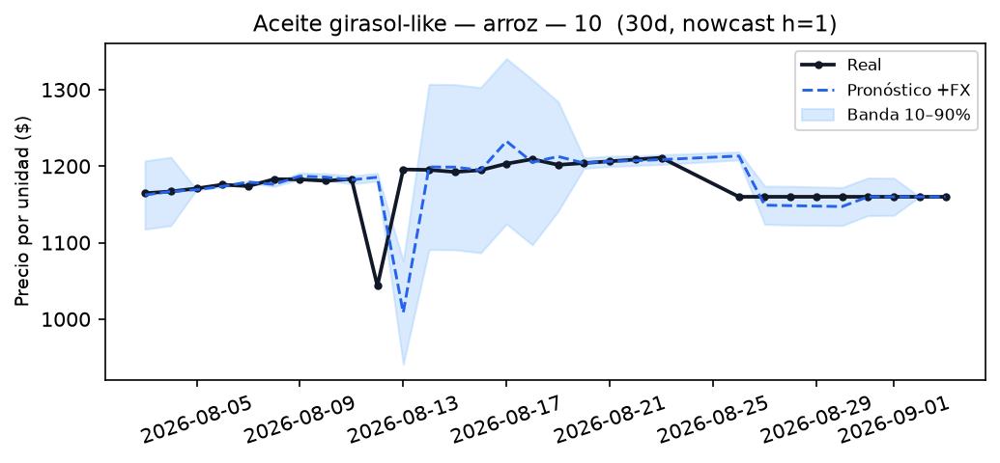
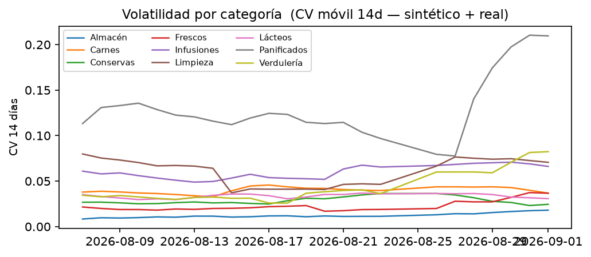

Rango: 2026-08-01 → 2026-09-03 · Reales: 7 · Sintéticos: 23 · Sintéticos en data/synthetic/rosario-*.json (no en data/*.json)
Gran Rosario Walk-forward h=1 Baseline naive (TimesFM no instalado) FX source: dolarapi.com (histórico interpolado) — IPIM: stub
Generado 2026-09-04 12:06 — forecast/eval_results_synthetic.json · Cadenas: Carrefour, Coto, DIA, La Anónima, Jumbo/Vea/Disco

| Config | MAE ($) |
|---|---|
| Solo precio | 152.6 |
| + FX | 152.6 |
| + FX + IPIM | 152.6 |
| + FX + competidor | 152.6 |



| mae | mape | rmse | coverage | n | series | pid | chain | config | category | event_daily_sube_n | event_daily_sube_actual | event_daily_sube_hits | event_daily_sube_precision | event_daily_sube_recall | event_daily_sube_f1 | event_daily_baja_n | event_daily_baja_actual | event_daily_baja_hits | event_daily_baja_precision | event_daily_baja_recall | event_daily_baja_f1 | event_daily_estable_n | event_daily_estable_actual | event_daily_estable_hits | event_daily_estable_precision | event_daily_estable_recall | event_daily_estable_f1 | event_weekly_sube_n | event_weekly_sube_actual | event_weekly_sube_hits | event_weekly_sube_precision | event_weekly_sube_recall | event_weekly_sube_f1 | event_weekly_baja_n | event_weekly_baja_actual | event_weekly_baja_hits | event_weekly_baja_precision | event_weekly_baja_recall | event_weekly_baja_f1 | event_weekly_estable_n | event_weekly_estable_actual | event_weekly_estable_hits | event_weekly_estable_precision | event_weekly_estable_recall | event_weekly_estable_f1 | event_move_precision_daily | event_move_precision_weekly |
|---|---|---|---|---|---|---|---|---|---|---|---|---|---|---|---|---|---|---|---|---|---|---|---|---|---|---|---|---|---|---|---|---|---|---|---|---|---|---|---|---|---|---|---|---|---|---|---|
| 0.7 | 0.4 | 1.8 | 0.7 | 30 | huevo__10 | huevo | 10 | price_only | Frescos | 0 | 0 | 0 | 0.0 | 0.0 | 0.0 | 4 | 0 | 0 | 0.0 | 0.0 | 0.0 | 26 | 24 | 24 | 92.3 | 100.0 | 96.0 | 0 | 0 | 0 | 0.0 | 0.0 | 0.0 | 4 | 0 | 0 | 0.0 | 0.0 | 0.0 | 25 | 3 | 3 | 12.0 | 100.0 | 21.4 | {'sube': 0.0, 'baja': 0.0, 'n_sube': 0, 'n_baja': 4} | {'sube': 0.0, 'baja': 0.0, 'n_sube': 0, 'n_baja': 4} |
| 0.7 | 0.4 | 1.8 | 0.7 | 30 | huevo__10 | huevo | 10 | plus_fx | Frescos | 0 | 0 | 0 | 0.0 | 0.0 | 0.0 | 4 | 0 | 0 | 0.0 | 0.0 | 0.0 | 26 | 24 | 24 | 92.3 | 100.0 | 96.0 | 0 | 0 | 0 | 0.0 | 0.0 | 0.0 | 4 | 0 | 0 | 0.0 | 0.0 | 0.0 | 25 | 3 | 3 | 12.0 | 100.0 | 21.4 | {'sube': 0.0, 'baja': 0.0, 'n_sube': 0, 'n_baja': 4} | {'sube': 0.0, 'baja': 0.0, 'n_sube': 0, 'n_baja': 4} |
| 0.7 | 0.4 | 1.8 | 0.7 | 30 | huevo__10 | huevo | 10 | plus_fx_ipim | Frescos | 0 | 0 | 0 | 0.0 | 0.0 | 0.0 | 4 | 0 | 0 | 0.0 | 0.0 | 0.0 | 26 | 24 | 24 | 92.3 | 100.0 | 96.0 | 0 | 0 | 0 | 0.0 | 0.0 | 0.0 | 4 | 0 | 0 | 0.0 | 0.0 | 0.0 | 25 | 3 | 3 | 12.0 | 100.0 | 21.4 | {'sube': 0.0, 'baja': 0.0, 'n_sube': 0, 'n_baja': 4} | {'sube': 0.0, 'baja': 0.0, 'n_sube': 0, 'n_baja': 4} |
| 0.7 | 0.4 | 1.8 | 0.7 | 30 | huevo__10 | huevo | 10 | plus_fx_competitor | Frescos | 0 | 0 | 0 | 0.0 | 0.0 | 0.0 | 4 | 0 | 0 | 0.0 | 0.0 | 0.0 | 26 | 24 | 24 | 92.3 | 100.0 | 96.0 | 0 | 0 | 0 | 0.0 | 0.0 | 0.0 | 4 | 0 | 0 | 0.0 | 0.0 | 0.0 | 25 | 3 | 3 | 12.0 | 100.0 | 21.4 | {'sube': 0.0, 'baja': 0.0, 'n_sube': 0, 'n_baja': 4} | {'sube': 0.0, 'baja': 0.0, 'n_sube': 0, 'n_baja': 4} |
| 3.4 | 0.4 | 7.4 | 0.7 | 30 | yerba__10 | yerba | 10 | price_only | Infusiones | 0 | 0 | 0 | 0.0 | 0.0 | 0.0 | 4 | 0 | 0 | 0.0 | 0.0 | 0.0 | 26 | 25 | 25 | 96.2 | 100.0 | 98.0 | 0 | 0 | 0 | 0.0 | 0.0 | 0.0 | 4 | 0 | 0 | 0.0 | 0.0 | 0.0 | 25 | 3 | 3 | 12.0 | 100.0 | 21.4 | {'sube': 0.0, 'baja': 0.0, 'n_sube': 0, 'n_baja': 4} | {'sube': 0.0, 'baja': 0.0, 'n_sube': 0, 'n_baja': 4} |
| 3.4 | 0.4 | 7.4 | 0.7 | 30 | yerba__10 | yerba | 10 | plus_fx | Infusiones | 0 | 0 | 0 | 0.0 | 0.0 | 0.0 | 4 | 0 | 0 | 0.0 | 0.0 | 0.0 | 26 | 25 | 25 | 96.2 | 100.0 | 98.0 | 0 | 0 | 0 | 0.0 | 0.0 | 0.0 | 4 | 0 | 0 | 0.0 | 0.0 | 0.0 | 25 | 3 | 3 | 12.0 | 100.0 | 21.4 | {'sube': 0.0, 'baja': 0.0, 'n_sube': 0, 'n_baja': 4} | {'sube': 0.0, 'baja': 0.0, 'n_sube': 0, 'n_baja': 4} |
| 3.4 | 0.4 | 7.4 | 0.7 | 30 | yerba__10 | yerba | 10 | plus_fx_ipim | Infusiones | 0 | 0 | 0 | 0.0 | 0.0 | 0.0 | 4 | 0 | 0 | 0.0 | 0.0 | 0.0 | 26 | 25 | 25 | 96.2 | 100.0 | 98.0 | 0 | 0 | 0 | 0.0 | 0.0 | 0.0 | 4 | 0 | 0 | 0.0 | 0.0 | 0.0 | 25 | 3 | 3 | 12.0 | 100.0 | 21.4 | {'sube': 0.0, 'baja': 0.0, 'n_sube': 0, 'n_baja': 4} | {'sube': 0.0, 'baja': 0.0, 'n_sube': 0, 'n_baja': 4} |
| 3.4 | 0.4 | 7.4 | 0.7 | 30 | yerba__10 | yerba | 10 | plus_fx_competitor | Infusiones | 0 | 0 | 0 | 0.0 | 0.0 | 0.0 | 4 | 0 | 0 | 0.0 | 0.0 | 0.0 | 26 | 25 | 25 | 96.2 | 100.0 | 98.0 | 0 | 0 | 0 | 0.0 | 0.0 | 0.0 | 4 | 0 | 0 | 0.0 | 0.0 | 0.0 | 25 | 3 | 3 | 12.0 | 100.0 | 21.4 | {'sube': 0.0, 'baja': 0.0, 'n_sube': 0, 'n_baja': 4} | {'sube': 0.0, 'baja': 0.0, 'n_sube': 0, 'n_baja': 4} |
| 3.6 | 0.6 | 6.4 | 0.6 | 30 | cebolla__10 | cebolla | 10 | price_only | Verdulería | 0 | 0 | 0 | 0.0 | 0.0 | 0.0 | 4 | 0 | 0 | 0.0 | 0.0 | 0.0 | 26 | 21 | 21 | 80.8 | 100.0 | 89.4 | 0 | 0 | 0 | 0.0 | 0.0 | 0.0 | 4 | 0 | 0 | 0.0 | 0.0 | 0.0 | 25 | 3 | 3 | 12.0 | 100.0 | 21.4 | {'sube': 0.0, 'baja': 0.0, 'n_sube': 0, 'n_baja': 4} | {'sube': 0.0, 'baja': 0.0, 'n_sube': 0, 'n_baja': 4} |
| 3.6 | 0.6 | 6.4 | 0.6 | 30 | cebolla__10 | cebolla | 10 | plus_fx | Verdulería | 0 | 0 | 0 | 0.0 | 0.0 | 0.0 | 4 | 0 | 0 | 0.0 | 0.0 | 0.0 | 26 | 21 | 21 | 80.8 | 100.0 | 89.4 | 0 | 0 | 0 | 0.0 | 0.0 | 0.0 | 4 | 0 | 0 | 0.0 | 0.0 | 0.0 | 25 | 3 | 3 | 12.0 | 100.0 | 21.4 | {'sube': 0.0, 'baja': 0.0, 'n_sube': 0, 'n_baja': 4} | {'sube': 0.0, 'baja': 0.0, 'n_sube': 0, 'n_baja': 4} |
| 3.6 | 0.6 | 6.4 | 0.6 | 30 | cebolla__10 | cebolla | 10 | plus_fx_ipim | Verdulería | 0 | 0 | 0 | 0.0 | 0.0 | 0.0 | 4 | 0 | 0 | 0.0 | 0.0 | 0.0 | 26 | 21 | 21 | 80.8 | 100.0 | 89.4 | 0 | 0 | 0 | 0.0 | 0.0 | 0.0 | 4 | 0 | 0 | 0.0 | 0.0 | 0.0 | 25 | 3 | 3 | 12.0 | 100.0 | 21.4 | {'sube': 0.0, 'baja': 0.0, 'n_sube': 0, 'n_baja': 4} | {'sube': 0.0, 'baja': 0.0, 'n_sube': 0, 'n_baja': 4} |
| 3.6 | 0.6 | 6.4 | 0.6 | 30 | cebolla__10 | cebolla | 10 | plus_fx_competitor | Verdulería | 0 | 0 | 0 | 0.0 | 0.0 | 0.0 | 4 | 0 | 0 | 0.0 | 0.0 | 0.0 | 26 | 21 | 21 | 80.8 | 100.0 | 89.4 | 0 | 0 | 0 | 0.0 | 0.0 | 0.0 | 4 | 0 | 0 | 0.0 | 0.0 | 0.0 | 25 | 3 | 3 | 12.0 | 100.0 | 21.4 | {'sube': 0.0, 'baja': 0.0, 'n_sube': 0, 'n_baja': 4} | {'sube': 0.0, 'baja': 0.0, 'n_sube': 0, 'n_baja': 4} |
| 4.3 | 0.4 | 9.4 | 0.7 | 30 | lavandina__15 | lavandina | 15 | price_only | Limpieza | 0 | 0 | 0 | 0.0 | 0.0 | 0.0 | 4 | 0 | 0 | 0.0 | 0.0 | 0.0 | 26 | 24 | 24 | 92.3 | 100.0 | 96.0 | 0 | 0 | 0 | 0.0 | 0.0 | 0.0 | 4 | 0 | 0 | 0.0 | 0.0 | 0.0 | 25 | 3 | 3 | 12.0 | 100.0 | 21.4 | {'sube': 0.0, 'baja': 0.0, 'n_sube': 0, 'n_baja': 4} | {'sube': 0.0, 'baja': 0.0, 'n_sube': 0, 'n_baja': 4} |
| 4.3 | 0.4 | 9.4 | 0.7 | 30 | lavandina__15 | lavandina | 15 | plus_fx | Limpieza | 0 | 0 | 0 | 0.0 | 0.0 | 0.0 | 4 | 0 | 0 | 0.0 | 0.0 | 0.0 | 26 | 24 | 24 | 92.3 | 100.0 | 96.0 | 0 | 0 | 0 | 0.0 | 0.0 | 0.0 | 4 | 0 | 0 | 0.0 | 0.0 | 0.0 | 25 | 3 | 3 | 12.0 | 100.0 | 21.4 | {'sube': 0.0, 'baja': 0.0, 'n_sube': 0, 'n_baja': 4} | {'sube': 0.0, 'baja': 0.0, 'n_sube': 0, 'n_baja': 4} |
| 4.3 | 0.4 | 9.4 | 0.7 | 30 | lavandina__15 | lavandina | 15 | plus_fx_ipim | Limpieza | 0 | 0 | 0 | 0.0 | 0.0 | 0.0 | 4 | 0 | 0 | 0.0 | 0.0 | 0.0 | 26 | 24 | 24 | 92.3 | 100.0 | 96.0 | 0 | 0 | 0 | 0.0 | 0.0 | 0.0 | 4 | 0 | 0 | 0.0 | 0.0 | 0.0 | 25 | 3 | 3 | 12.0 | 100.0 | 21.4 | {'sube': 0.0, 'baja': 0.0, 'n_sube': 0, 'n_baja': 4} | {'sube': 0.0, 'baja': 0.0, 'n_sube': 0, 'n_baja': 4} |
| 4.3 | 0.4 | 9.4 | 0.7 | 30 | lavandina__15 | lavandina | 15 | plus_fx_competitor | Limpieza | 0 | 0 | 0 | 0.0 | 0.0 | 0.0 | 4 | 0 | 0 | 0.0 | 0.0 | 0.0 | 26 | 24 | 24 | 92.3 | 100.0 | 96.0 | 0 | 0 | 0 | 0.0 | 0.0 | 0.0 | 4 | 0 | 0 | 0.0 | 0.0 | 0.0 | 25 | 3 | 3 | 12.0 | 100.0 | 21.4 | {'sube': 0.0, 'baja': 0.0, 'n_sube': 0, 'n_baja': 4} | {'sube': 0.0, 'baja': 0.0, 'n_sube': 0, 'n_baja': 4} |
| 4.8 | 0.5 | 10.1 | 0.7 | 30 | harina_000__15 | harina_000 | 15 | price_only | Almacén | 0 | 0 | 0 | 0.0 | 0.0 | 0.0 | 4 | 0 | 0 | 0.0 | 0.0 | 0.0 | 26 | 24 | 24 | 92.3 | 100.0 | 96.0 | 0 | 0 | 0 | 0.0 | 0.0 | 0.0 | 4 | 0 | 0 | 0.0 | 0.0 | 0.0 | 25 | 3 | 3 | 12.0 | 100.0 | 21.4 | {'sube': 0.0, 'baja': 0.0, 'n_sube': 0, 'n_baja': 4} | {'sube': 0.0, 'baja': 0.0, 'n_sube': 0, 'n_baja': 4} |
| 4.8 | 0.5 | 10.1 | 0.7 | 30 | harina_000__15 | harina_000 | 15 | plus_fx | Almacén | 0 | 0 | 0 | 0.0 | 0.0 | 0.0 | 4 | 0 | 0 | 0.0 | 0.0 | 0.0 | 26 | 24 | 24 | 92.3 | 100.0 | 96.0 | 0 | 0 | 0 | 0.0 | 0.0 | 0.0 | 4 | 0 | 0 | 0.0 | 0.0 | 0.0 | 25 | 3 | 3 | 12.0 | 100.0 | 21.4 | {'sube': 0.0, 'baja': 0.0, 'n_sube': 0, 'n_baja': 4} | {'sube': 0.0, 'baja': 0.0, 'n_sube': 0, 'n_baja': 4} |
| 4.8 | 0.5 | 10.1 | 0.7 | 30 | harina_000__15 | harina_000 | 15 | plus_fx_ipim | Almacén | 0 | 0 | 0 | 0.0 | 0.0 | 0.0 | 4 | 0 | 0 | 0.0 | 0.0 | 0.0 | 26 | 24 | 24 | 92.3 | 100.0 | 96.0 | 0 | 0 | 0 | 0.0 | 0.0 | 0.0 | 4 | 0 | 0 | 0.0 | 0.0 | 0.0 | 25 | 3 | 3 | 12.0 | 100.0 | 21.4 | {'sube': 0.0, 'baja': 0.0, 'n_sube': 0, 'n_baja': 4} | {'sube': 0.0, 'baja': 0.0, 'n_sube': 0, 'n_baja': 4} |
| 4.8 | 0.5 | 10.1 | 0.7 | 30 | harina_000__15 | harina_000 | 15 | plus_fx_competitor | Almacén | 0 | 0 | 0 | 0.0 | 0.0 | 0.0 | 4 | 0 | 0 | 0.0 | 0.0 | 0.0 | 26 | 24 | 24 | 92.3 | 100.0 | 96.0 | 0 | 0 | 0 | 0.0 | 0.0 | 0.0 | 4 | 0 | 0 | 0.0 | 0.0 | 0.0 | 25 | 3 | 3 | 12.0 | 100.0 | 21.4 | {'sube': 0.0, 'baja': 0.0, 'n_sube': 0, 'n_baja': 4} | {'sube': 0.0, 'baja': 0.0, 'n_sube': 0, 'n_baja': 4} |
| 5.4 | 0.5 | 10.9 | 0.7 | 30 | arroz__2 | arroz | 2 | price_only | Almacén | 0 | 0 | 0 | 0.0 | 0.0 | 0.0 | 4 | 0 | 0 | 0.0 | 0.0 | 0.0 | 26 | 23 | 23 | 88.5 | 100.0 | 93.9 | 0 | 0 | 0 | 0.0 | 0.0 | 0.0 | 4 | 0 | 0 | 0.0 | 0.0 | 0.0 | 25 | 3 | 3 | 12.0 | 100.0 | 21.4 | {'sube': 0.0, 'baja': 0.0, 'n_sube': 0, 'n_baja': 4} | {'sube': 0.0, 'baja': 0.0, 'n_sube': 0, 'n_baja': 4} |
| 5.4 | 0.5 | 10.9 | 0.7 | 30 | arroz__2 | arroz | 2 | plus_fx | Almacén | 0 | 0 | 0 | 0.0 | 0.0 | 0.0 | 4 | 0 | 0 | 0.0 | 0.0 | 0.0 | 26 | 23 | 23 | 88.5 | 100.0 | 93.9 | 0 | 0 | 0 | 0.0 | 0.0 | 0.0 | 4 | 0 | 0 | 0.0 | 0.0 | 0.0 | 25 | 3 | 3 | 12.0 | 100.0 | 21.4 | {'sube': 0.0, 'baja': 0.0, 'n_sube': 0, 'n_baja': 4} | {'sube': 0.0, 'baja': 0.0, 'n_sube': 0, 'n_baja': 4} |
| 5.4 | 0.5 | 10.9 | 0.7 | 30 | arroz__2 | arroz | 2 | plus_fx_ipim | Almacén | 0 | 0 | 0 | 0.0 | 0.0 | 0.0 | 4 | 0 | 0 | 0.0 | 0.0 | 0.0 | 26 | 23 | 23 | 88.5 | 100.0 | 93.9 | 0 | 0 | 0 | 0.0 | 0.0 | 0.0 | 4 | 0 | 0 | 0.0 | 0.0 | 0.0 | 25 | 3 | 3 | 12.0 | 100.0 | 21.4 | {'sube': 0.0, 'baja': 0.0, 'n_sube': 0, 'n_baja': 4} | {'sube': 0.0, 'baja': 0.0, 'n_sube': 0, 'n_baja': 4} |
| 5.4 | 0.5 | 10.9 | 0.7 | 30 | arroz__2 | arroz | 2 | plus_fx_competitor | Almacén | 0 | 0 | 0 | 0.0 | 0.0 | 0.0 | 4 | 0 | 0 | 0.0 | 0.0 | 0.0 | 26 | 23 | 23 | 88.5 | 100.0 | 93.9 | 0 | 0 | 0 | 0.0 | 0.0 | 0.0 | 4 | 0 | 0 | 0.0 | 0.0 | 0.0 | 25 | 3 | 3 | 12.0 | 100.0 | 21.4 | {'sube': 0.0, 'baja': 0.0, 'n_sube': 0, 'n_baja': 4} | {'sube': 0.0, 'baja': 0.0, 'n_sube': 0, 'n_baja': 4} |
| 5.5 | 1.6 | 15.3 | 0.8 | 30 | huevo__15 | huevo | 15 | plus_fx_competitor | Frescos | 1 | 0 | 0 | 0.0 | 0.0 | 0.0 | 5 | 0 | 0 | 0.0 | 0.0 | 0.0 | 24 | 21 | 21 | 87.5 | 100.0 | 93.3 | 1 | 1 | 1 | 100.0 | 100.0 | 100.0 | 5 | 0 | 0 | 0.0 | 0.0 | 0.0 | 23 | 3 | 3 | 13.0 | 100.0 | 23.1 | {'sube': 0.0, 'baja': 0.0, 'n_sube': 1, 'n_baja': 5} | {'sube': 100.0, 'baja': 0.0, 'n_sube': 1, 'n_baja': 5} |